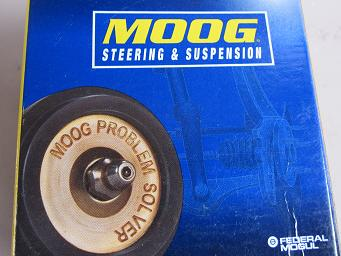
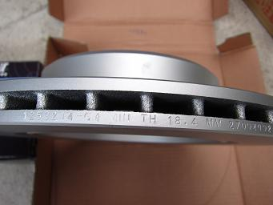
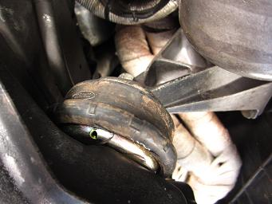

2014/2/2 ＯＥＭ・社外品ってどうなの？！
Ｍゴローが実際に使った感想を写真が残っているものは写真を交えながら書いていく。
輸入車の部品は純正、ＯＥＭから社外品、コピー品と数多くの部品が販売されている。
まず、ＯＥＭ品について。
ＢＭＷのＯＥＭ品とは、部品についているＢＭＷマークの部分を削った部品だ。
上のブッシュとオイルセンサーにはＢＭＷマークが削られた跡があるのが分かる。
ＯＥＭ品とは、基本的にＢＭＷ純正部品と同じもので、ライセンスの関係からＢＭＷマークが削られた物のことを言う。
社外品になるとゴムブッシュ１つにしても、数え切れないくらいのメーカーが製造している。
中には純正価格の1/2や1/4の価格で販売されている部品もたくさんある。
今回は各メーカーの製品を品質・耐久性・価格に分け 評価は４段階 ・優 ◎ ・良 〇 ・可 △ ・悪 ×でつけていく。
例外もあるが、基本的にＢＭＷ純正はこのようになる。
●ＢＭＷ純正部品
●Lemförder
| 品質
| 耐久性
| 価格
|
Lemförder
| ◎
| ◎
| 〇
|
スラストアーム、ブッシュ、リヤアッパーマウントなど使ってみた感想だ。
ＢＭＷマークを削っただけの部品だけあって、多少高くても悩んだ時に選んでおけば間違いないメーカーだ。
●Sachs
| 品質（駆動系/足回り）
| 耐久性（駆動系/足回り）
| 価格（駆動系/足回り）
|
Sachs
| ◎/×
| ◎/×
| △/◎
|
駆動系の部品か足回りの部品かで品質が大きく変わる。
駆動系部品の品質は間違いないのだが、純正とあまり変わらない値段の部品が多い。
足回り（ゴム）の部品はあまり耐久性が良くない。
●ＶＤＯ
電装系パーツを作っているＶＤＯだ。
センサー類は精度も良く、ＯＥＭでも問題はない。
しかし、この時に交換した電動ファンは１年も持たずに壊れた。 レジスターが壊れたのか、ロー側が回らなくなった。 たまに接触不良が見られ、その都度配線を加工する必要があった。
最終的にはカプラー内に水が入り、電極がひどく錆びていた。 現在は他の物に交換済み。
E34 525/535だとスラストアームのブッシュが このメーカーだ。
前回まで使用していたBOGEのブッシュはハードなサーキット走行を２回もこなし、30000Ｋｍ使った。ＭＥＹＬＥの強化品と比べてもすごい耐久性だ。
交換時もまだ使えそうなフィールだったが、走行距離的に気になったので交換した。使おうと思えばまだ使えただろう。
●Ｂｏｓｃｈ
最近、フィルターなどの消耗品の工場をインドに作ったようだ。
インドで作られたオイルフィルターには、パッキンなどの付属品が付いていないことがあるので要確認。
このメーカーも悩んだときに選んでおけば間違いないだろう。
ライセンスの問題からか、燃料ポンプなどの高価な部品は日本へ販売してくれない海外の部品商も多い。
●ＢＥＲＵ
イグニッションコイルやデスビなど電装部品のメーカーだ。
少し不安な品質ながら、10万キロ近くデスビを使っているが問題は起きていない。
純正価格の1/3でこれだけ使えれば合格だ。
●ＭＥＹＬＥ
フィーリングは無視！ 耐久性と品質はそこそこにコストを抑えたいユーザー向けだろうか。
ドイツマイレの頃はここ数年のような品質の悪さは無かったように思う。
各国に生産を拠点を持つようになってから品質のコントロールが出来なくなってしまったのだろうか。
スラストアームブッシュは一見劣化しているように見えなくても、内部でゴムが断裂していることがあった。
アッパーマウントを交換したレポートにもあるが、ＨＤ（ヘビーデューティー）なんて言葉は信用しないように。
●ＭＴＣ
エアークリーナーやアイドルバルブなどにつながっているゴムホースを作っているメーカーだ。
品質、耐久性共に極めて低い。 １ヶ月もすればゴムがひび割れてくる。
このメーカーの部品は避けたほうが良いだろう。
●ＡＣＭ
ドイツにあるエアコン系統の部品を作っているメーカーだ。
ブロアファンとファンカップリングを使っているが問題ない。値段も安くオススメだ！
●Karlyn
足回りのブッシュやリンクを使ったが、かなり耐久性が低い。
スタビリンクやステアリングアームなんて何度交換したことか (--; このメーカーも避けたほうが良いだろう。
●Hamburg Technic
| 品質
| 耐久性
| 価格
|
Hamburg Technic
| ×
| ×
| ◎
|
名前の通り、ドイツのハンブルグにあるのだろうか？ このメーカーも良くなかった。
日本の気候に合わないのか？元々品質が良くないのか？
ロッドエンドのブーツは半年でダメになったり、グリスが入ってなかったり。 このメーカーも避けたほうが良いだろう。
●Rein Automotive
| 品質 | 耐久性 | 価格 |
| Rein Automotive | × | × | ◎ |
ラジエターホースやマウントなどゴム製品を作っているメーカーだ。
これまでに挙げてきたメーカーで一番品質が良くないメーカーかもしれない。
ラジエターホースにはゴムの真ん中に繊維が挟んであり強度を出しているが、
その繊維がホース内面に露出し、その繊維を伝って断面から冷却水が漏れるという（汗
純正のホースと比べると、断面の厚さが1/2ほどだった。
ＭＴマウントは数回シフトチェンジしたら真っ二つになるくらいのレベルのものだった。
安くても絶対に手を出さないように。
●Ruville
ウォーターポンプなどの水周りから足回りまで作っているメーカーだ。
ステアリングタイロッド、ウォーターポンプなどを使ってみたが、どれも良い製品だった。
●Ｆｅｂｉ
品質と耐久性を「？」にしたのは、品質にバラつきがあるからだ。
リアアッパーマウントと使ったときは10000ｋｍ持たずダメになり、ゴム製品はダメかと思いきや・・・
スタビリンクは５万キロくらい経った今でもブーツは破れることなくリンクもしっかりしているし、スラストアーム本体はしっかりグリスも充填されていて良い感じだ。
かと思えば、クマスターシリンダーはシリンダー抑えのＣリングが購入時から無く使えなかったり。
なんだか良く分からないメーカーだ。
ハズレだった時のことを考えると・・・ 他に選べるメーカーがあればそちらを選んだほうが良いかもしれない。
●Ｖａｉｃｏ
このメーカーも 耐久性がかなり低い。足回りの部品は避けたほうが良いだろう。
●Stabilus
トランクやボンネットのダンパーはこのメーカーがオススメだ。
極端に安いものはスグに抜けてしまうが、このメーカーのダンパーは安いながら持ちも良い。
●Tuff Support
上記の極端に安いメーカーのダンパーがコレだ。
ダンパーの全長が長くてボンネットが閉まらなかったり、固定用のスプリングが弱かったり。
●TRW
足回りから電装まで品質が一定しているように思う。
信頼できるメーカーだ。
●Victor Reinz
E34は純正ガスケットもこのメーカーが多い。
製造から２０年以上経ったＥ３４の部品でも進化し続けているユーザー思いのメーカーだ。
ヘッドカバーガスケットにはガスケットの上にゴムパッキンが塗布されている。
この前に購入した時にはついていなかった。これは嬉しい改良だ。
●ÜRO Parts
ドアのフチについているゴム枠を使用してみたが、接着が弱いのかベースから剥れたり、短期間でゴムがスポンジのように砕けたり。
純正はかなり高価だがそれを選んだほうが確かだ。
これに懲りてこのメーカーの他の部品は試していない。今後も試すことはないだろう。
まるでヨーロッパにあるメーカーのような名前だが、アメリカのメーカーだ。
●Taiwan Golden Quality
| 品質 | 耐久性 | 価格 |
Taiwan Golden Quality (TGQ) | 〇 | 〇 | ◎ |
びっくりするほど安い！
品質は悪くなさそうなので、そこが改善されれば良さそうだ。
上の写真は40000km走行したＴＧＱのコントロールアーム ピロ部分もしっかりしていた。
●MOOG
これもかなりお値打ちに手に入るメーカーだ。

アメ車の部品を得意としているようだ。ヨーロッパでは扱っている所が少ないように思う。
●Breni
最近出始めたブレーキメーカーだ。
有名メーカーのOEMらしいがディクセルのプレーンローターよりも品質も精度も良さそうだ。
ハット部分にはシルバーコーティングが施されていて錆びないようになっている。

スリットやドリルドではなく、プレーンディスクならこのメーカーがオススメだ。
ちなみに、仕方なくディクセルのローターを使うのであればHDシリーズをおすすめする。
PDシリーズはハードブレーキングを繰り返すとすぐにヒートスポットができてジャダーが出る。
●CORTECO
フィルターで有名なメーカーだ。
エンジンマウントやガスケット、オイルシールも使ったが問題は無い。マウント類は他の社外品に比べ価格が高い傾向にある。
少しの金額の差で迷った時に選ぶと間違いないだろう。

今回はＭゴローの使用してみた感想であり、全てがあてはまるわけではない。
純正品ながら品質が良くない例外的な部品もあった。
例を挙げるとValeoのオルタネーターは純正部品ながら２回連続で不良品（オーバーﾁｬｰｼﾞ）だった。
さらに酷いものを挙げると下の写真のパーツはBMW純正 ディーラーで購入だがこの品質だ。
これから何かパーツを選ぶときにこのページが参考になれば嬉しい。
現在もテスト中のパーツが多数ある。結果が出次第追記していく予定だ。